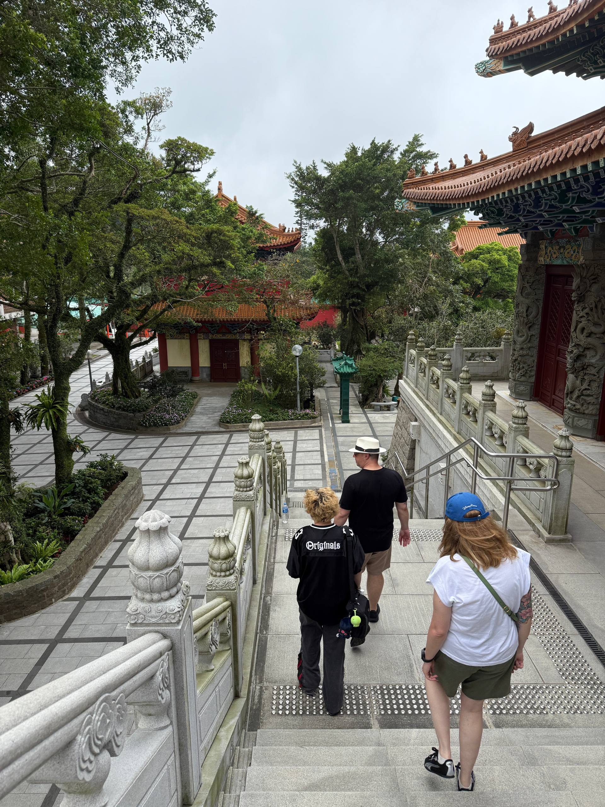
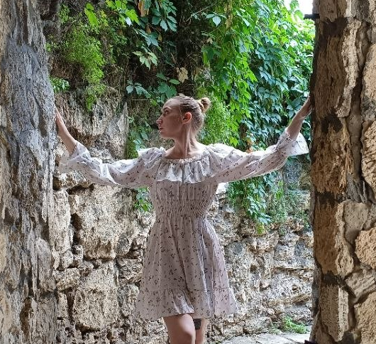

Китайский
Китайский Японский
Японский
 Испанский
Испанский
Календарь сытой панды
Как только панда съест последний пельмень, поток начнется.
Статус потока
Каждый день панда съедает по одному сочному китайскому пельменю. Это символизирует уходящее время до старта курса. Закрепи за собой место до того, как тарелка опустеет!
Что тебя ждет в потоке
Сообщество
Люди из разных точек мира одного уровня с тобой, с которыми можно обсуждать любые интересующие темы по китайскому онлайн.
Plus vibe
Учимся знакомиться, шутить, заказывать не острую еду и понимать дорамы в оригинале на живых примерах. Это не обучение, это edutainment.
Опытная ведущая
Таня задаст вектор встреч, поделится накопленным международным опытом и разберет любой спорный вопрос по языку с точки зрения своих знаний. А еще поможет тебе раскрыть языковой потенциал.
Финальная встреча с китайцем
В конце каждого потока мы приглашаем китайского гостя, чтобы он поделился инсайтами о китайской и русской культуре.

2 гайда в подарок
При покупке потока ты получишь авторские гайды от Никиты Тамбовцева — основателя Tea. Личный опыт, скрытые места и инсайты, которых нет в интернете.
Шанхай
Где есть, что смотреть и как не попасть в туристические ловушки
Гонконг
Секретные локации, локальная еда и лайфхаки для первого визита
Ребята уже говорят на китайском
«Для меня поток останется в памяти как вызов для нейронов и ощущение «надо же, я вроде понимаю». Когда слушаешь речь Тани, дух захватывает от восторга 🤩 Это не универ и школа, где глобально преподавателю не до нас. Она вкладывает во встречи свободу, душу и это чувствуется. Встреча в Москве — это вишенка на торте ☺️ »
Настя
«Я попала на поток «по объявлению», просто за две минуты решив, почему бы и нет! И могу сказать, что классно, когда можешь узнать даже один иероглиф из субтитров к китайским видео, а со знанием цифр можно еще и сроки годности на китайских специях отличать 😄»
Лена
Таня в соцсетях
Путь к языку через дорамы
Первый контакт
Почему все китайцы хорошие
Секреты языка
Лучший месяц для поездки в Китай
По мнению Тани
Мегаострая еда в Китае
Что нужно говорить в ресторанах
Больше про Таню
- 1. Изучила сотни учебников и курсов и знает, что реально помогает в освоении китайского
- 2. Много раз была в Китае, как турами, так и дикарём
- 3. Постоянно общается с китайцами и проводит с ними эфиры
- 4. Любитель китайских дорам и хорошего чая. Лучшее комбо, чтобы обсудить красавчиков и красавиц из поднебесной
- 5. Против учебников и зазубривания прописей до потери пульса
- 6. Регулярно общается с носителями.
- 7. Понимает, как говорить на китайском так, чтобы тебя поняли. Многое зависит от произношения.
- 8. Провела 4 потока в Tea.


Получи 10% скидку на поток с Таней
Просто подпишись на наш Tg-канал и напиши в чат на сайте, либо в директ канала.
Скидка работает только при первой покупке.